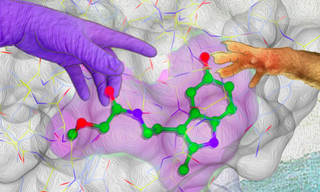
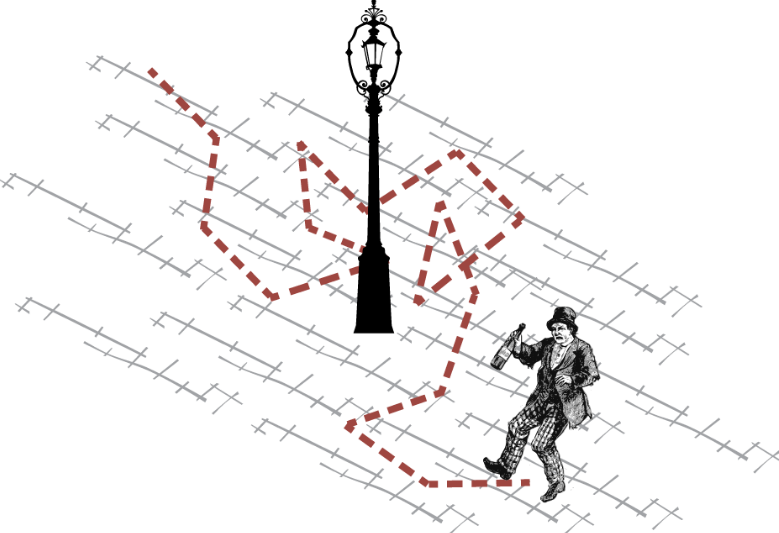
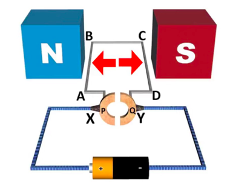
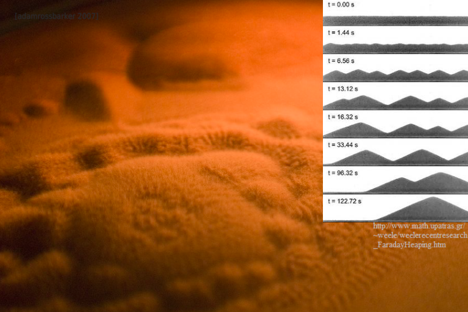

Program 14. kolovoza
STROJNO UČENJE I TEORIJA IGARA - ILI KAKO NAUČITI RAČUNALO VARATI
Strojno učenje je danas izuzetno popularno, u područjima raznih industrija, ali i u javnosti. Ne bez razloga, naravno: pokazano je kako strojevi mogu obavljati raznolike zadatke (kao što su raspoznavanje i razumijevanje sadržaja slike, prevođenje jezika, medicinska dijagnostika i mnoge druge) bolje od čovjeka. Strojno učenje je još uvijek većim dijelom neistraženo područje, s mnogim problemima koji tek trebaju biti riješeni, a čija rješenja će izmjeniti život svakog pojedinca. U ovoj radionici ćemo koristiti jednostavnu igru s dva igrača temeljenu na donošenju odluka. Korištenjem takve igre demonstrirati će se proces korištenja strojnog učenja kako bi oformili model nadljudskih sposobnosti. Analizirati će se ljudske performanse u igri, pokušat će ih se dostići računalnom implementacijom jednostavnih pravila, i za kraj pokušati naučiti računalo pobijediti čovjeka i natjecati se protiv njega.
Ivan Jurin
Photomath, Zagreb
Ivan je istraživački računalni inženjer u tvrtci Photomath. Jedan je od inžinjera zaslužnih za modele stojnog učenja koji čitaju i rješavaju matematičke zadatke u aplikaciji Photomath. Prošlog ljeta završio je FER, gdje se najviše bavio primjenom strojnog učenja u području računalnog vida, za što je dobio i Rektorovu nagradu te na tome temeljio završni i diplomski rad. U slobodno vrijeme voli planinarenje, putovanja, duge šetnje pješčanim plažama, i naravno, finu hranu.
Što se događa nakon smrti? – Promjene kroz koje tijelo prolazi
Unatoč nastojanjima znanosti i moderne medicine smrt je i dalje neizostavan (i prirodan) dio života. Kako i dalje zaokuplja interese ljudi, smrt (i mrtva tijela) su svoje mjesto našli i u današnjem svijetu zabave – preko televizijskih programa i kriminalističkih serija. Smrt i ubojstva su postali dio naše svakodnevne razonode, od pogađanja kako je filmska žrtva umrla do toga tko je ubojica. Ova radionica vam nudi kratki uvid u rad mrtvozornika i sudske medicine, i daje vam priliku da saznate koliko je toga što viđamo na TV-u istina u praksi. Dobiti ćete i priliku pokušati dati neke od odgovora koji se uvijek očekuju od mrtvozornika, kao što je kada je osoba umrla i je li tijelo pomicano.

Lavinia Mehinović
Sveučilište u Zagrebu, Hrvatska
Lavinia je studentica 6. godine Medicinskog fakulteta u Zagrebu. Privodi svoje obrazovanje na fakultetu kraju i nada se da će uskoro postati doktor medicine. Iz područja medicine zanimaju ju radiologija, kirurgija, hitna i sudska medicina. Slobodno vrijeme voli provoditi čitajući (pogotovo kriminalističke romane).
Enzimi – što rade i kako funkcioniraju
Život na Zemlji dolazi u raznim oblicima i veličima, i funkcionalni organizam je jedna od najkompleksnijih stvari kojima se možemo pozabaviti. Pritom su presudna dva procesa: samoreplikacija i kataliza kemijskih reakcija. Na ovoj radionici učit ćemo o enzimima, biološkim katalizatorima koji omogućuju organizmima (uključujući i tebe) da na učinkovit, brz i selektivan način provode metaboličke reakcije. Znanje o enzimima te kako oni rade ima nevjerojatno široku primjenu. Na primjer, u medicini – lijekovi su napravljeni tako da stupaju u interakciju s enzimima jer je mnogo bolesti uzrokovano manjkom ili prevelikom aktivnošću jednog ili više enzima u određenom metaboličkom putu. Također, enzimi nam omogućuju probavu ugljikohidrata i proteina koje svakodnevno konzumiramo, zbog čega ćemo se baviti mehanizmima probavnih enzima. Spektroskopski ćemo promatrati enzimsku kinetiku preko koje ćemo upoznati Michaelis-Menteninu jednadžbu, jedan od najpoznatijih modela enzimske kinetike.
Mihaela Mihaljević
Sveučilište u Zagrebu, Hrvatska
Mihaela je studentica druge godine molekularne biologije na Prirodoslovno-matematičkom fakultetu u Zagrebu. Sudjelovala je u Ljetnoj školi znanosti 2016. godine, mjesec dana prije početka studija. Zanimaju ju brojne grane biologije, od mikrobiologije, nanotehnologije, genetike do biokemije. U svoje slobodno vrijeme uživa u prirodi, čita knjigu te šalje razglednice putem stranice Postcrossing.
Sličnost između pijanog fizičara i financijskih tržišta
Mnogi procesi u znanosti (i svakodnevnom životu) se ne mogu predvidjeti s potpunom određenošću. Razlozi za to su brojni, a ponekad jednostavno nemamo dovoljno informacija o sustavu koji želimo proučavati. Zamisao ove radionice je pokazati kako možemo nešto naučiti u situacijama gdje nam nedostaju određene informacije. Takve situacije su česte u fizici, no također i, na primjer, na financijskim tržištima gdje se mnogo toga događa nasumično. Metode za rješavanje ovakvih problema su iste u svim situacijama te su glavna tema ove radionice. Polaznici će naučiti osnove ovih metoda te ih iskoristiti na jednostavnim modelima.
Grgur Šimunić
Institut Ruđer Bošković, Zagreb, Hrvatska
Grgur radi doktorat na Institutu Ruđer Bošković u Zagrebu, gdje proučava generaliziranu, kompleksnu geometriju i njene primjene u fizici, npr. teorija struna i dvostrukih polja. Podučavanje je Grgurova velika strast, te je već nekoliko puta vodio radionice na raznim ljetnim školama. Na ovoj radionici namjerava pokazati sudionicima ljepotu matematike i njenu primjenjivost u fizici.
Način rada i konstrukcija jednostavnog elektromotora
Jeste li se ikada razmišljali o načinu na koji motori u automobilima rade? A što je sa električnim motorima korištenim u javnom prijevozu? Jedan od najznačajnijih izuma korisnih čovječanstu je zapravo električni motor. Njegova vrijednost je u pretvaranju električne energije u mehaničku koja je presudna za pokretanje stroja. U ovoj radionici bit će uveden način na koji elektromotori rade. Nadalje, izgradnja jednostavnog elektromotora bit će prezentirana polaznicima kako bi bili u mogućnosti izraditi vlastiti. Iznad svega, polaznici će biti upoznati sa terminima poput elektromotorne sile, skraćeno emf, koja nastaje na izvoru električne energije, komutator koji je obrnuto od električnog motora te osnove elektromagnetizma potrebne za razvijanje fizikalne pozadine iza cijele priče.
Mateja Batelić
Sveučilište u Zagrebu, Hrvatska
Mateja je studentica druge godine fizike na Prirodoslovno-matematičkom fakultetu u Zagrebu. Ovo je njezino prvo sudjelovanje u Ljetnoj školi znanosti S3/S3++. Njezin glavni interes u fizici je kvantna fizika, kao i optika i kvantna fotonika. Zaljubila se u ovo područje fizike tijekom sudjelovanja u Ljetnoj školi na Institutu Ruđer Bošković. U slobodno vrijeme voli čitati krimiće, putovati i upoznavati nove kulture, dok je njezina najveća strast plesanje salse i dvoranskih plesova.
Faraday Heaping – samoudruživanje granula u hrpe
Granularna dinamika je polje fizike koje se bavi proučavanjem ponašanja sipkih materijala poput šljunka, pijeska, pahuljica, itd. Ovakvi materijali su specifični po tome što se, ovisno o vanjskim uvijetima, katkad ponašaju poput čvrstog tijela a katkad poput fluida. Razumijevanje njihovog ponašanja je poglavito bitno u industriji (npr. transport i obrada žitarica) i u geologiji (npr. opis ponašanja na granicama tektonskih ploča). U ovoj radionici ćemo pobliže proučiti fenomen Faraday heapinga, tj. pijeska koji se, podvrgnutog vertikalnoj oscilaciji niskih frekvencija, skuplja u hrpice. Pokušat ćemo postići ovaj fenomen i raspraviti o teoriji oko njegovog točnog uzroka.
Magdalena Živković
Sveučilište u Manchesteru, UK
Magdalena je završila XV. gimnaziju u Zagrebu. Tijekom srednje postala je zainteresirana za eksperimentalnu fiziku, te je sudjelovala u brojnim natjecanjima (Državno, IYPT, ICYS). 2016. godine je sudjelovala u S3++ kao polaznica, a također je član Istraživačkog centra mladih. Magdalena tenutno studira fiziku i matematiku na Manchesterskom Sveučilištu. Set njenih znanstvenih interesa uglavnom obuhvaća nelinearnu dinamiku, ali to je još otvoreno promjenama. Osim fizike, bavi se debatom i voli crtati.